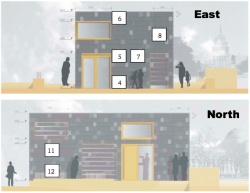

WSN@Solarhaus
From DVSWiki
This page describes the wireless sensor network deployed at TUD's Solarhaus 2009.
The project is being carried out as part of the WSN Lab 2010/11. The goal is to implement a data collection application using the TikiDB/Scopes stack.
Contents[hide] |
[edit] Sensor Positions
Legend:
- T = Temperature sensor
- H = Humidity sensor
- CO2 = CO2 Sensor station (CO2 + humidity + temperature)
Inner Room (R):
{kind=link}
{kind=link}
Cooling Ceiling (K):
{kind=link}
{kind=link}
Fassade (F):
ID  | T | H | CO2 | Pic | Desc. | Pos. | Diagram
|
|---|---|---|---|---|---|---|---|
| 63 | x | x | Fassade east, down | F4 |  | ||
| 64 | x | x | Fassade east, middle (Fassade's effect from heatpump) | F5 | |||
| 65 | x | x | Fassade east, up | F6 | |||
| 66 | x | x | Fassade east, middle (heatpump's exhaust air) | F7 | |||
| 67 | x | x | Fassade east, up (Fassade's effect from cooling ceiling) | F8 | |||
| 68 | x | x | Fassade west, middle (heatpump's air inlet) | F11 | |||
| 69 | x | x | Fassade west, bottom (Fassade's effect from cooling ceiling) | F12 |
{kind=link}
{kind=link}
{kind=link}
{kind=link}
{kind=link}
{kind=link}
{kind=link}
[edit] Connectivity
The Solar House is equipped with a Linksys NSLU2 as gateway. The device runs a modified version of OpenWRT, and is accessible through the network.
- IP Address: 130.83.166.163 (currently, within DVS network, 130.83.166.235)
- User name: root
- Password: testbed
The system runs a custom made data forwarder which takes the input from the sensor node connected to the USB port, and inserts data into the SQL database. The software is called 'result-writer', and can be found in our SVN repository here.
To compile it, use the following command:
~/workspace/testbed/openwrt-backfire/staging_dir/toolchain-armeb_v5te_gcc-4.3.3+cs_uClibc-0.9.30.1_eabi/usr/bin/armeb-openwrt-linux-gcc -Wall -o ./result-writer-arm.o result-writer.c -I/home/wsn/workspace/testbed/openwrt-backfire/staging_dir/target-armeb_v5te_uClibc-0.9.30.1_eabi/usr/include/mysql -L/home/wsn/workspace/testbed/openwrt-backfire/staging_dir/toolchain-armeb_v5te_gcc-4.3.3+cs_uClibc-0.9.30.1_eabi/lib/ -L/home/wsn/workspace/testbed/openwrt-backfire/staging_dir/target-armeb_v5te_uClibc-0.9.30.1_eabi/usr/lib/ -L/home/wsn/workspace/testbed/openwrt-backfire/staging_dir/target-armeb_v5te_uClibc-0.9.30.1_eabi/usr/lib/mysql -lmysqlclient -lz -lcrypt -lnsl -lm -Xlinker -rpath-link /home/wsn/workspace/testbed/openwrt-backfire/staging_dir/target-armeb_v5te_uClibc-0.9.30.1_eabi/usr/lib/
The data can be viewed with a php-based webpage. It is called 'WSN Viewer', and can be found in our SVN repository here.